Klikom na dugme "Vozovi" menadžeri pristupaju funkcionalnostima za upravljanje vozovima. Menadžeri mogu da vide osnovne informacije o dostupnim vozovima, klikom na dugme "Izmeni" mogu da izmene osnovne informacije o vozovima, klikom na dugme "Obriši" mogu da uklone voz iz upotrebe. Osnovne informacijame o vozovima su: naziv, kapacitet, brzina. Sa desne strane panela za pregled osnovnih informacija o vozovima nalazi se dugme "Dodaj" koje služi za dodavanje novog voza u sistem. Klikom na ovo dugme otvara se forma koju je potrebno popuniti da bi novi voz bio dodat u sistem.
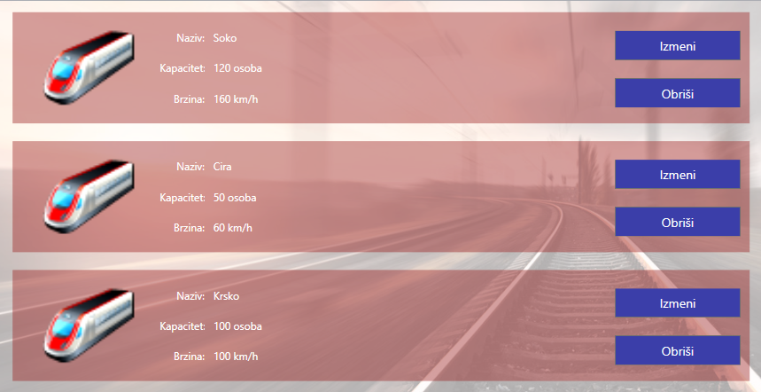 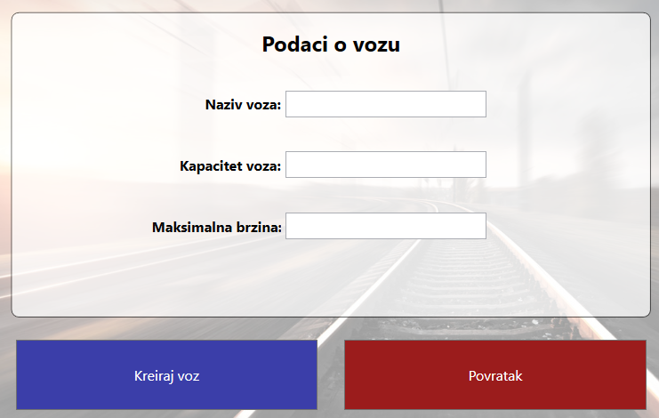
Sistem pomoći za menadžere
Na stranici namenjenoj menadžerima, menadžeri su u mogućnosti da:
- Upravljaju vozovima
- Upravljaju stanicama
- Upravljaju voznim linijama
- Upravljaju redom vožnje
- Pregledaju izveštaje
- Vrše pretragu nad entitetima sistema
- Izvrše odjavu sa aplikacije
Upravljanje vozovima
Upravljanje stanicama
Klikom na dugme "Stanice" menadžeri pristupaju funkcionalnostima za upravljanje stanicama. Menadžeri mogu da vide osnovne informacije o dostupnim stanicama, klikom na dugme "Izmeni" mogu da izmene osnovne informacije o stanicama, klikom na dugme "Obriši" mogu da uklone stanicu iz mreže stanica. Osnovne informacijame o stanicama su: naziv stanice i susedne stanice. Sa desne strane panela za pregled osnovnih informacija o stanicama nalazi se dugme "Dodaj" koje služi za dodavanje nove stanice u sistem. Klikom na ovo dugme otvara se forma koju je potrebno popuniti da bi nova stanica bila dodata u sistem. Potrebno je uneti naziv stanice, na mapi označiti fizičku lokaciju stanice i uneti sve susedne stanice novoj stanici.
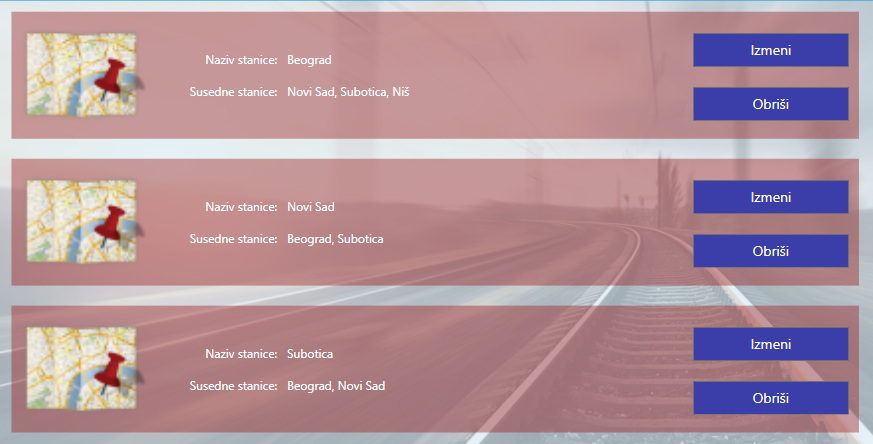 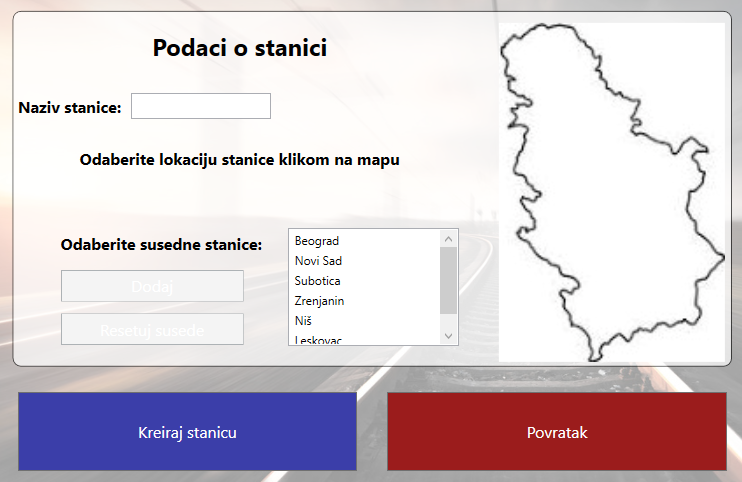Upravljanje vozim linijama
Klikom na dugme "Vozne linije" menadžeri pristupaju funkcionalnostima za upravljanje voznim linijama. Menadžeri mogu da vide osnovne informacije o dostupnim voznim linijama, klikom na dugme "Izmeni" mogu da izmene osnovne informacije o voznim linijama, klikom na dugme "Obriši" mogu da uklone vozni liniju iz sistema. Osnovne informacijame o voznim linijama oduhvataju: polaznu stanicu, usputne stanice, krajnju stanicu, ukupno vreme putovanja, kao i ukupnu cenu putovanja od početne do krajnje stanice. Sa desne strane panela za pregled osnovnih informacija o voznim linijama nalazi se dugme "Dodaj" koje služi za dodavanje nove vozne linije u sistem. Klikom na ovo dugme otvara se forma koju je potrebno popuniti da bi nova vozna linija bila dodata u sistem. Dodavanje nove vozne linije sastoji se od četiri koraka prvi korak jeste odabir početne i krajnje stanice, kao i stanica koje će biti posećene na ovoj ruti. Stanice dodajete drag-drop tehnikom. Klikom na dugme "Sledeće" prelazite na novi korak, odabir voza. Sa desne strane panela možete videti kako izgleda mrežni prikaz rute i voz koji ste izabrali. Klikom na dugme "Sledeće" prelazi se na treći korak, podešavanje vremena i cene između svake stanice. Poslednji korak predstavlja generalni pregled svih unetih podataka. Klikom na dugme "Sačuvaj" nova vozna linija će biti dodata u sistem.
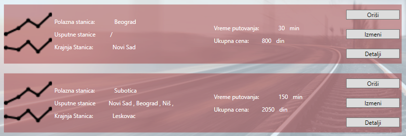 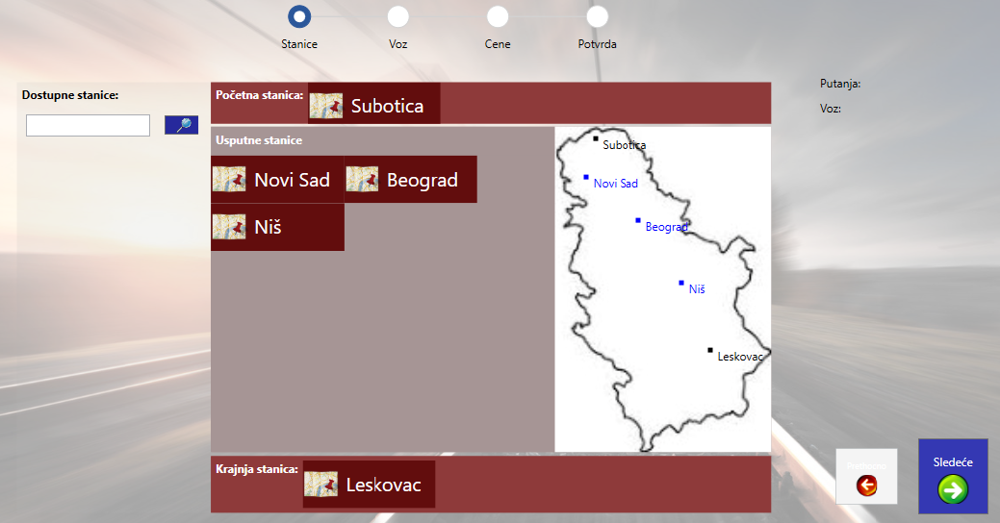 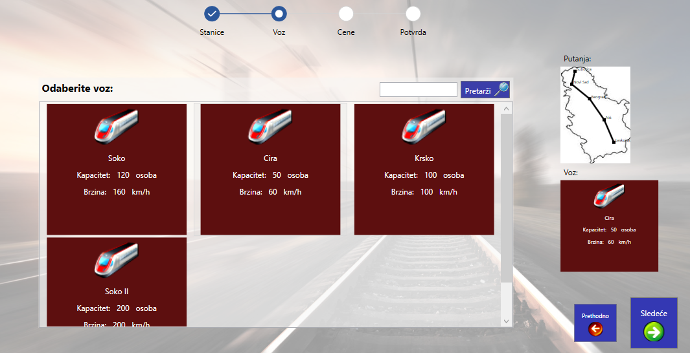 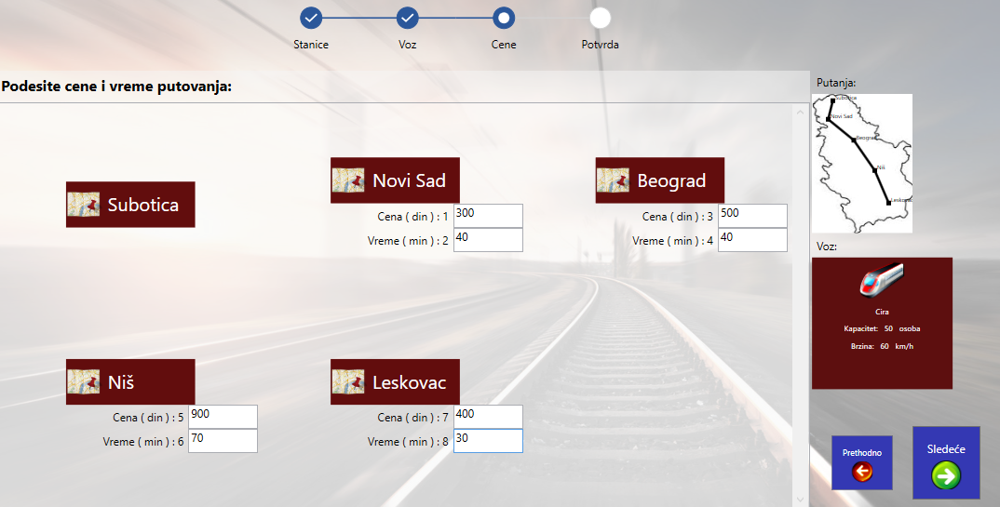 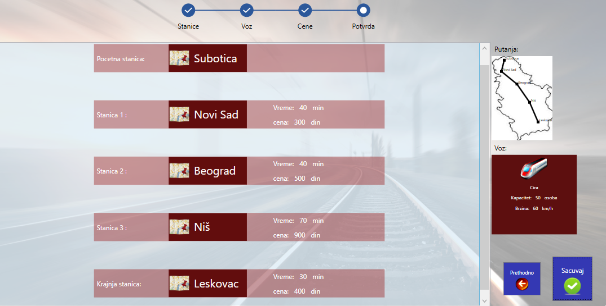Upravljanje redom vožnje
Klikom na dugme "Red vožnje" menadžeri pristupaju funkcionalnostima za upravljanje redom vožnje. Menadžeri mogu da vide osnovne informacije o svim polascima, klikom na dugme "Izmeni" mogu da izmene osnovne informacije o polasku, klikom na dugme "Obriši" mogu da uklone dolazak iz sistema. Osnovne informacijame o polasku su: vozna linija, vreme polaska i vreme dolaska. Sa desne strane panela za pregled osnovnih informacija o redu vožnje nalazi se dugme "Dodaj" koje služi za dodavanje novog polaska u sistem. Klikom na ovo dugme otvara se forma koju je potrebno popuniti da bi novi polazak bio dodat u sistem. Potrebno je izabrati voznu liniju i vreme polaska. Dok će vreme dolaska izračunati sistem.
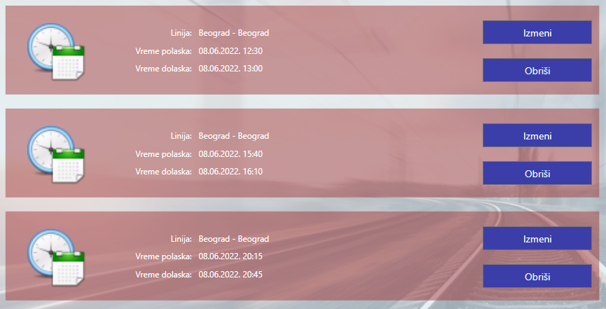 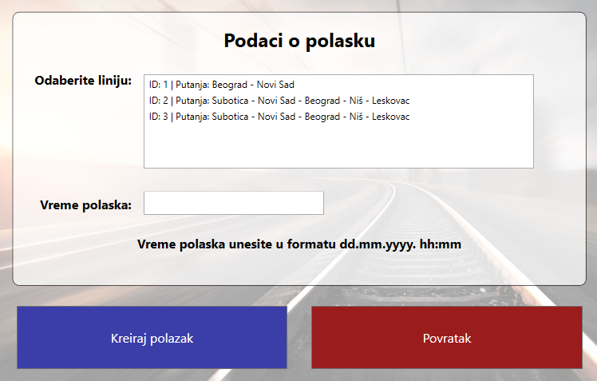Pregled izveštaja
Klikom na dugme "Izveštaji" menadžeri pristupaju pregledu izveštaja. Menadžerima su dostupna dva izveštaja broj prodatih karti po mesecima i broj prodatih karti za svaki polazak. Klikom na dugme "Detalji" menadžer može dobiti detaljniji pregled izveštaja.
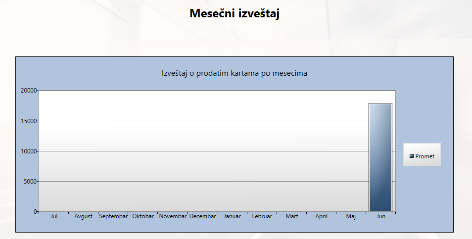 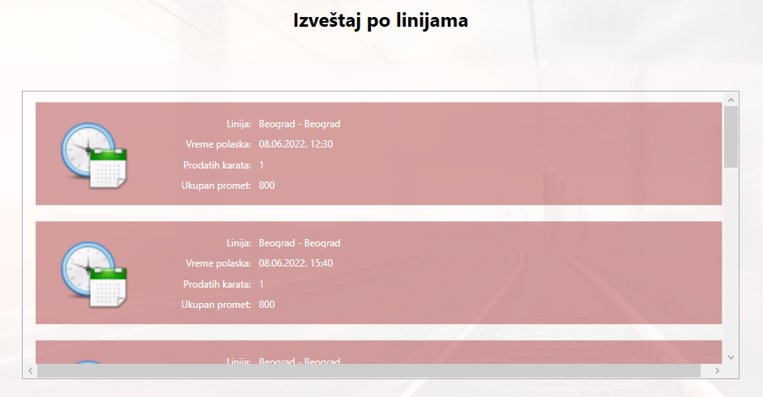Pretraga i filtriranje nad entitetima
Menadžer je u mogućnosti da vrši pretragu i filtriranje entiteta u sistemu po njihovim atributima.
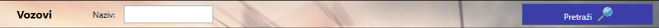Odjava sa aplikacije
Klikom na dugme "Izloguj se" menadžer će biti odjavljen sa aplikacije.
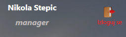